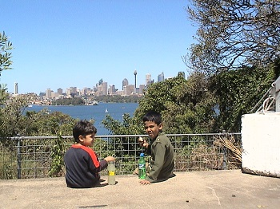
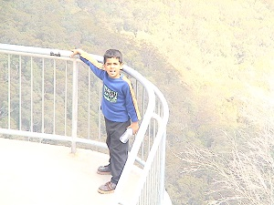
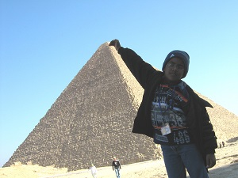

I was born on 27th October 1997 in Surat, Gujarat, nearly 400 years after the death of the legendary Mughal Emperor Akbar. I spent the first 2 years of my life in my native state of Kerala with my grandparents. Days before my 2nd birthday, I set foot in Bahrain, where my dad was working with Aluminium Bahrain (ALBA). I started nursery at the age of 3 at the Al Dana Nursery. Around this time, I was blessed with a baby sister, Vrinda. At the age of 4, I got enrolled into LKG at the Asian School Bahrain. Sigh. Those were the best days of my life. My childhood memories bring tears of joy, even to this day.

In the winter of 2004, at the age of 7, I went on my first international trip to AUSTRALIA, NEW ZEALAND and THAILAND. Each of these countries presented a plethora of diverse culture and scenery. While Australia is bubbling with life and activities, including surfing, New Zealand is a calm and scenic place with exquisite landscapes. I visited the Sydney Opera House and the Harbour Bridge too. Both these monuments are such mind blowing structures with brilliant architecture, hence earn their rightful place as the most popular symbols of Australia. Thailand, on the other hand, is a tropical country with lots of coconut trees and beaches. If you want to visit beaches, Pattaya is a must for you. The place is sprawling with the most exotic beaches in the world.For a mere 7 year old kid, this was mind boggling and awe inspiring.

Fast forward to winter,2006. Age:9. I visited my dream country: EGYPT. I had always been fascinated by world mythology. Egyptian mythology was the most ancient in the world, hence my craving to visit the country. I have never seen so much diversity within the same country. While Alexandria is mainly an ethnic Egyptian marketplace for the people who want to see the trade life of Egypt, it also has exquisite beaches where one could go scuba diving. From Alexandria, I went on an overnight cross-country train to Luxor. Luxor, on the other hand, is famous for its varied temples and tombs like the Valley of the Kings, Valley of the Queens, Temple of Hatshepsut etc. Although the temples were in ruins, they still captured the aura of the ancient civilization within them. I also went in the famous Nile cruise, which was an unforgettable experience filled with exotic dances, exquisite food and lots of entertainment. Finally, I rounded off my trip in Cairo, the capital of the country. The highlights of this place are the 2000 year old Pyramids of Giza. Even today, The Pyramids stand tall with a magnificent Sphinx guarding it in all its grandeur. Egypt, being one of the oldest of all human civilizations, is a must see for all history buffs.
In 2009, it was time for me to leave a country that I had come to love more than my very own nation. The days spent in Bahrain gave me the best childhood I could ever have asked for. But as the famous saying goes: Change is the only constant in life. It was time for life's next adventure.